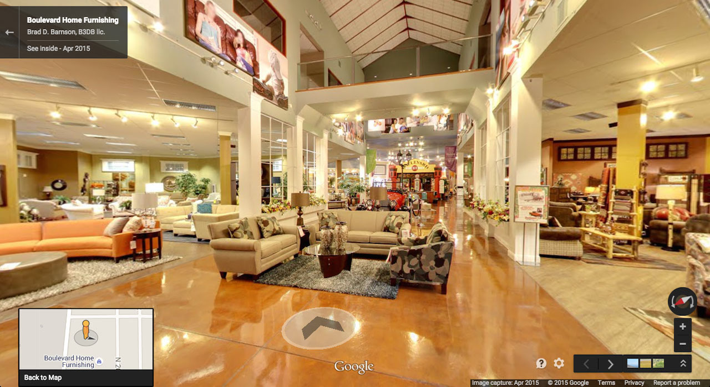
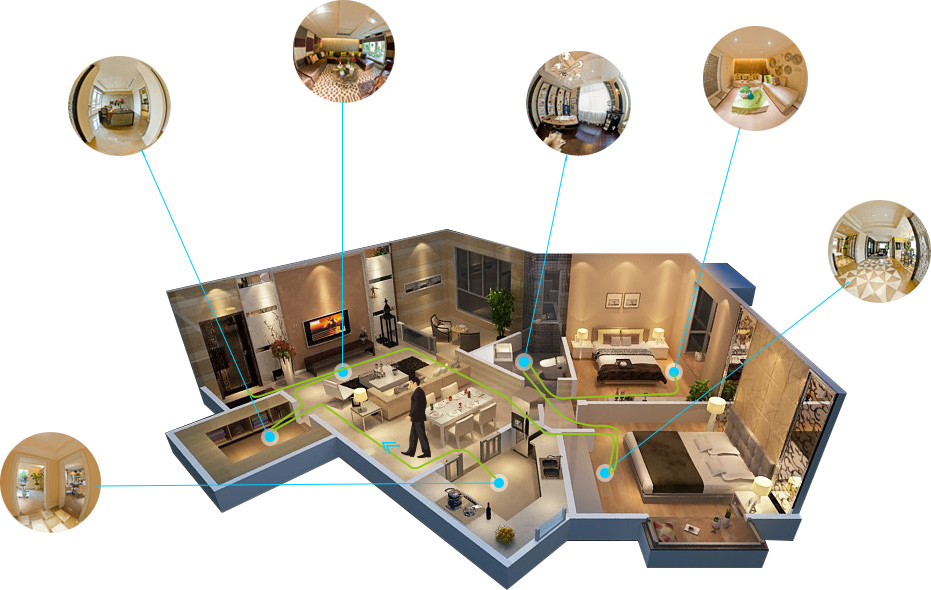

Chi ti cerca decide online, prima di contattarti
Il 76% di chi cerca da smartphone un'attività “nelle vicinanze” la visita entro un giorno, e il 28% di quelle ricerche si conclude con un acquisto.
Think with Google, 2016
Virtual tour 360° · realizzazione e pubblicazione
Immagini a 360° navigabili, collegate tra loro e pubblicate su Google Maps e Street View. Si aprono da un link, sul telefono o sul computer, senza scaricare nulla.

probabilità di generare interesse per le schede con foto e virtual tour
Google, studio 2015 su 1.201 rispondenti
richieste di indicazioni stradali per le attività che aggiungono foto al profilo
Google, playbook Business Profile 2026
di chi cerca da smartphone un'attività “nelle vicinanze” la visita entro un giorno
Think with Google, 2016
È un insieme di immagini a 360° navigabili, collegate tra loro: chi lo visita si sposta da un ambiente all'altro e guarda dove vuole, in alto, in basso, dietro di sé.
Non è un video da guardare passivamente: è il visitatore a decidere dove andare, cosa osservare e quanto tempo dedicarci.
Il tour si condivide con un link, si integra nel sito, si stampa come QR code e si pubblica su Google Maps e Street View, dove lo trova chiunque cerchi la tua attività.

Il 76% di chi cerca da smartphone un'attività “nelle vicinanze” la visita entro un giorno, e il 28% di quelle ricerche si conclude con un acquisto.
Think with Google, 2016
Le attività che aggiungono foto al profilo ricevono +42% di richieste di indicazioni stradali e +35% di clic al sito; il 90% delle persone è più propenso a visitare un'attività che mostra le proprie foto.
Google, playbook Business Profile 2026
Chi ha già visto lo spazio e decide comunque di chiamarti è davvero interessato: meno visite a vuoto, meno telefonate per informazioni ovvie, meno trattative che si fermano alla prima occhiata.
Un ambiente visitabile per intero rassicura più di dieci foto scelte con cura, perché comunica che non c'è nulla da nascondere. E trasmette l'atmosfera, che è esattamente ciò che una foto piatta non riesce a dare.
TheFork, 2026: il 33% degli italiani sceglie il locale valutando foto, menu e atmosfera
Si realizza una volta e resta utilizzabile per anni su sito, portali, Google, email, social e materiale stampato. A differenza della pubblicità, non consuma budget ogni mese.
Il 54% degli event planner europei si aspetta di trovare un tour 3D quando valuta una location, ma solo il 18% dei musei italiani ne offre uno. Dove l'aspettativa c'è e l'offerta no, chi arriva prima ha un vantaggio.
Cvent / Censuswide, 2023-2024 · ISTAT, 2022
Qualsiasi attività legata a un luogo fisico può trarne beneficio. Per ciascun settore, il dato che lo giustifica.
In Italia il 63,7% dei pernottamenti arriva dal canale diretto e metà dei viaggiatori italiani inizia la ricerca da un motore di ricerca. Ogni prenotazione spostata dall'intermediario al diretto vale dal 15% al 23% di commissione risparmiata.
HOTREC / HES-SO Valais, 2024 · AGCM, provvedimento A558, 2024
Il 33% degli italiani over 25 sceglie il locale valutando personalmente foto, menu e atmosfera. Le schede ristorante con foto registrano +73% di engagement, +107% oltre le 35 immagini.
TheFork, 2026 · TripAdvisor, 2014
Il 54% degli event planner europei si aspetta di trovare un tour 3D. In Italia si celebrano 16.700 matrimoni di coppie straniere l'anno, con una spesa media di 67.000 €: più di metà delle coppie non può fare il sopralluogo.
Cvent / Censuswide, 2023-2024 · Convention Bureau Italia, dati 2025
Chi acquista un'auto passa 6 ore e 31 minuti online contro 2 ore e 55 in concessionaria, e il sito del venditore è il primo punto di contatto per il 72% degli acquirenti.
Cox Automotive, 2024 Car Buyer Journey Study
Il 61% dei buyer B2B preferisce informarsi senza passare da un venditore, e il 69% riscontra incoerenze tra sito e forza vendita. Un virtual tour costa meno di una singola trasferta commerciale internazionale, oltre 2.000 $.
Gartner, 2025 · Booking.com for Business, 2024
Solo il 18% dei musei italiani offre un tour virtuale, il 13,7% nelle Aree Interne. Intanto l'offerta culturale è il primo fattore nella scelta della destinazione per il 44% degli europei.
ISTAT, 2022 e 2025 · Eurobarometro Flash 499, 2021
Scatto le immagini a 360° nei punti chiave dello spazio, interni ed esterni.
Le panoramiche vengono lavorate e collegate tra loro, ambiente per ambiente.
Il tour va online: link, sito, QR code, Google Maps e Street View.
Il preventivo è su misura, in base alla superficie e al numero di punti di ripresa.
Nel settore circolano statistiche che non reggono a una verifica: “+30% di prenotazioni”, “cinque volte più tempo sul sito”, “−40% di visite inutili”. Nessuna è riconducibile a uno studio pubblicato, e qui non ne trovi: ogni numero di questa pagina ha una fonte pubblica, elencata in fondo.
Va detto anche il resto: nessuno studio misura oggi di quanto un virtual tour aumenti le vendite. Quello che si può fare è misurarlo sui tuoi numeri — visualizzazioni della scheda Google, richieste di indicazioni, chiamate, tempo sulla pagina, contatti ricevuti — rilevati prima della pubblicazione e riletti dopo tre e sei mesi.
Il virtual tour non sostituisce la visita di persona: la prepara. Fa arrivare al contatto diretto solo chi ha già visto, capito e scelto.
Alcuni degli spazi già navigabili online.
Raccontami che spazio vuoi mostrare: ti dico quanti punti di ripresa servono e quanto costa.
Tutte le fonti sono state consultate ad agosto 2026.